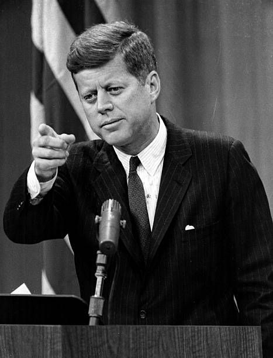

Sumber- John F. Kennedy (JFK) adalah Presiden ke-35 Amerika Serikat dan salah satu tokoh paling terkenal dalam sejarah politik AS. Berikut adalah informasi penting tentang kehidupan dan kariernya:
Lahir pada 29 Mei 1917, di Brookline, Massachusetts, dalam keluarga kaya dan berpengaruh. Ia adalah anak kedua dari Joseph P. Kennedy Sr. dan Rose Fitzgerald Kennedy. Kennedy belajar di Harvard University, di mana ia meraih gelar sarjana dalam bidang Ilmu Politik pada 1940.
Perang Dunia II: Pada 1941, Kennedy bergabung dengan Angkatan Laut AS dan menjadi kapten kapal torpedo PT-109. Pada 1943, kapal yang dikomandani Kennedy dihantam oleh kapal Jepang, dan Kennedy berhasil menyelamatkan kru yang selamat, yang kemudian menjadi salah satu momen heroik dalam hidupnya. Karier Politik: Setelah perang, Kennedy memasuki dunia politik. Ia terpilih menjadi anggota Dewan Perwakilan Rakyat AS pada 1946 dan kemudian menjadi Senator Massachusetts pada 1953.
Pada 1960, Kennedy mencalonkan diri sebagai presiden dari Partai Demokrat dan memenangkan Pemilu Presiden AS. Ia mengalahkan Richard Nixon dalam pemilihan yang sangat ketat, yang terkenal dengan debate televisi pertama yang sangat dramatis antara keduanya. Dilantik pada 20 Januari 1961, Kennedy menjadi presiden termuda dalam sejarah AS (pada saat itu, 43 tahun).
1. Perang Dingin dan Hubungan Internasional: Krisis Rudal Kuba (1962): Salah satu momen paling tegang selama masa kepresidenannya. Ketika Uni Soviet menempatkan rudal nuklir di Kuba, Kennedy memimpin blokade laut terhadap Kuba dan berhasil mencapai kesepakatan damai yang menghindari perang nuklir. Aliansi untuk Kemajuan: Inisiatif untuk meningkatkan hubungan dengan negara-negara Amerika Latin melalui bantuan ekonomi dan reformasi. Peningkatan Keterlibatan di Vietnam: Kennedy memperluas keterlibatan AS di Vietnam Selatan, meskipun ia tidak ingin terjebak dalam perang besar.
2. Domestik dan Kebijakan Sosial: Gerakan Hak Sipil: Kennedy mendukung hak-hak sipil untuk warga Afrika-Amerika, meskipun pada awalnya berhati-hati. Namun, pada 1963, ia mulai mendorong Undang-Undang Hak Sipil. Program "New Frontier": Kebijakan domestik yang mencakup reformasi pendidikan, kesehatan, dan ekonomi untuk meningkatkan kehidupan masyarakat AS, termasuk Program Pendidikan untuk Semua dan bantuan kepada para penyandang cacat.
3. Program Luar Angkasa: Pada 1961, Kennedy mengumumkan bahwa AS harus mengirim seorang astronot ke bulan sebelum akhir dekade. Ini berujung pada program Apollo yang akhirnya berhasil mendaratkan manusia di bulan pada 1969.
Assasination: Pada 22 November 1963, Kennedy ditembak mati di Dallas, Texas, saat melakukan perjalanan politik. Ia meninggal pada usia 46 tahun. Lee Harvey Oswald ditangkap dan dituduh sebagai pelaku, meskipun ada banyak teori konspirasi yang berkembang mengenai pembunuhannya. Warisan: Kennedy dikenang sebagai seorang pemimpin yang penuh karisma, berbicara dengan inspirasi dan visi untuk masa depan yang lebih baik. Ia menekankan pentingnya perdamaian dunia, kemajuan sosial, dan inovasi teknologi. Ucapan terkenalnya, "Ask not what your country can do for you – ask what you can do for your country", masih dianggap sebagai salah satu pidato paling berpengaruh dalam sejarah politik AS. Di luar kebijakan, ia sangat dihormati karena kemampuannya untuk menginspirasi rakyat AS, terutama melalui era yang penuh ketegangan, seperti Perang Dingin dan gerakan hak sipil.
Jacqueline Kennedy Onassis adalah istri dari John F. Kennedy. Mereka memiliki dua anak, Caroline dan John F. Kennedy Jr.. Keluarga Kennedy tetap menjadi salah satu keluarga paling berpengaruh di AS, dengan anggota keluarga lainnya terlibat dalam politik dan kemanusiaan. Kennedy tetap menjadi sosok yang sangat dihormati dan dikenang dalam sejarah Amerika Serikat. Banyak yang merasa bahwa jika ia tidak meninggal begitu muda, ia mungkin bisa menciptakan perubahan yang lebih besar dalam sejarah negara tersebut.